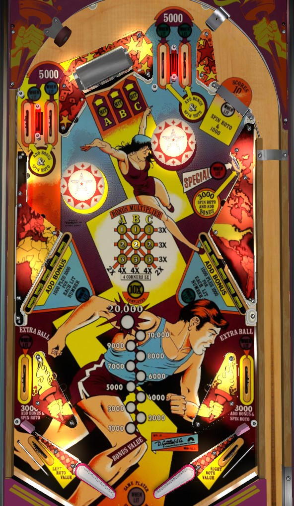

Complete a pair of top lanes to light a bank of drop targets for boosted value. Hit the roto-target to light squares of the tic-tac-toe grid to build bonus multipliers and raise the boosted drop target value. Once bonus multiplier is high and drop target banks are lit, clear drops for big points and increase the bonus- once the base bonus is maxed at 20,000 points, shooting the upper right gate to return the ball to the shooter lane will collect half of the bonus, allowing it to be built further.
There are two pairs of top lanes: one just to the right of center, and one far off to the left, very missable on first glance. All lanes are lit at the start of the ball. Roll through a lit lane to unlight it. Lit lanes score 5,000 points and a bonus advance. Unlit lanes score 500 points and a bonus advance. Completing a pair of lanes (left or right) lights the bank of drop targets on the same side of the table for increased value, and lights the lower side lane on the same side of the table for extra ball. (On 3 ball play, lower side lane extra ball(s) are always lit. On 5 ball play, their availability alternates on 10-point switch hits.)
Three panels of the roto-target are visible at the top of the table. Roto-target panels are either 1, 2, or 3. The left panel of the roto-target corresponds with A, the middle panel corresponds with B, and the right panel corresponds with C. Hitting a roto-target panel scores 3,000 points and lights the grid position whose column corresponds to the location of the hit roto-target and the whose row corresponds to the number on the hit drop target.
B2, the center position, is always lit for free at the start of the ball. Completing the left bank of drop targets spots A1 and C3, the top left and bottom right corners. Completing the right bank of drop targets spots A3 and C1, the top right and bottom left corners.
The roto-target is spun by any top lane, the upper right gate, and the lower side lanes. The left and right out lane award the currently shown left and right panels of the roto-target.
Completing either diagonal on the 1-2-3-A-B-C grid awards a bonus multiplier of 2x. Completing any horizontal row gives a bonus multiplier of 3x. Completing any vertical column makes the bonus multiplier 4x. Lighting all 4 corners makes the multiplier 5x. Completing the whole card is worth the maximum bonus multiplier of 10x.
Each drop target down in either bank always scores 1 bonus advance. If the bank of targets is not lit, each target down scores 500 points. If the bank of targets is lit, each target down scores 1,000 points plus an additional 1,000 per lit position in the 1-2-3-A-B-C grid, for a minimum of 2,000 and maximum of 10,000 points per target down. Completing either bank instantly resets that bank. Completing the left bank lights grid positions A1 and C3, while completing the right bank lights A3 and C1. Completing both banks of drop targets lights the lone standup target in the upper right for a special.
A two way gate in the upper right can be shot directly. A shot through this gate can either fall back into the shooter lane for a replunge, or continue back up to the top lanes- if it continues back up, it's likely to go down one of the top lanes in the right pair. The gate itself scores 1,000 points and spins the roto-target. If the current base bonus is maxed out at 20,000 points, using this gate will score an additional 10,000 points times the current bonus multiplier and reset the base bonus back to 10,000 points, so it can be built up further.
Score 1,000 points in a 3 ball game or 100 points in a 5 ball game.
Torch has just one lower side lane on each side of the table. These lanes score 3,000 points, spin the roto-target, award a bonus advance, and can be lit for extra ball by lighting the pair of top lanes on the same side of the table. Below these lower side lanes is a single post. The ball can be nudged or bounced off this post, where it catches a rail and is directed toward the flippers. If the ball falls into the gap next to the post, it goes down the out lane and drains, awarding either the left or right roto-target value along the way. Be careful when catching the ball; it can roll up the flipper and guide rail and fall into the gap that leads to the out lane.
Base bonus is advanced by any top lane, drop target, or lower side lane. Max base bonus is 20,000 points. Bonus multipliers are awarded for completing lines of the roto-target grid as described above. Bonus can be partially collected at the upper right gate once it is maxed at 20,000 points, as also described above. Base bonus and multipliers can never be carried from ball to ball.
In competition/novelty play, extra balls and specials both score 50,000 points. If extra balls are enabled, there is a maximum of 1 extra ball available per ball in play- no stacking extra balls.